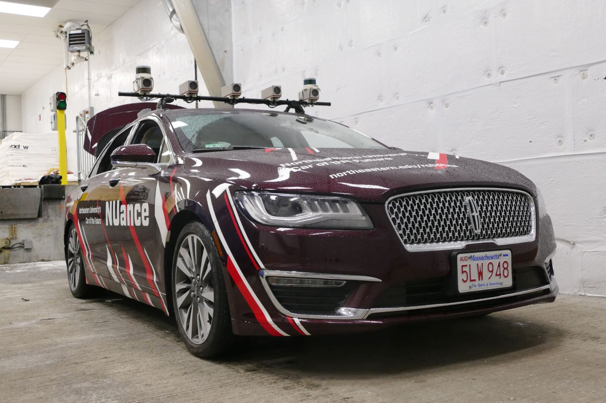
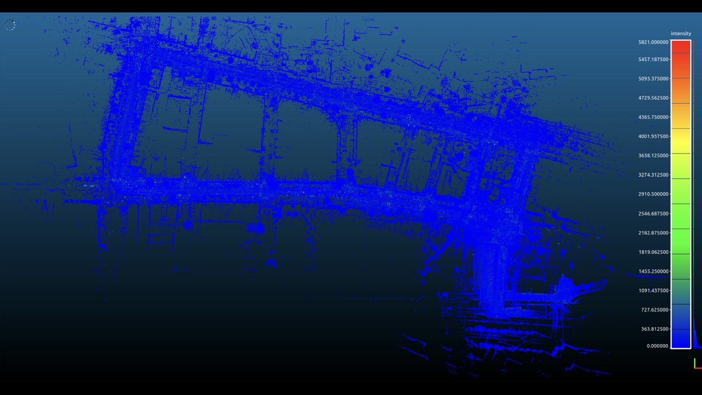
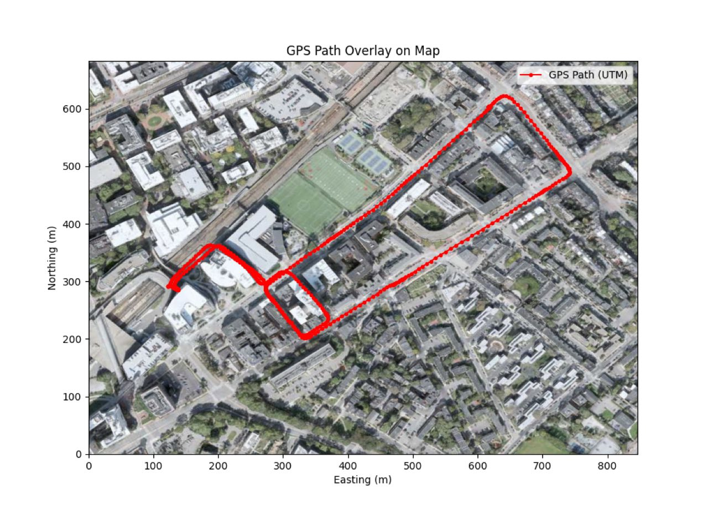

Navigation & SLAM.
Localization and mapping on an autonomous vehicle. Custom ROS2 drivers, IMU/GPS sensor fusion via an Extended Kalman Filter, and Fast-LIO SLAM tested on a Boston street dataset I collected myself.

Sep to Dec
Localization & mapping
Sensor fusion
EKF · Fast-LIO
The brief.
The goal was to push localization accuracy on an autonomous vehicle by combining classical state estimation with LiDAR-inertial SLAM, then test it on real data instead of a clean simulation. I built the sensor drivers, the fusion pipeline, and the evaluation against a Boston dataset I collected myself.
Drivers & sensor fusion.
I implemented custom Python and C++ ROS2 drivers for the vehicle and fused IMU and GPS through an Extended Kalman Filter with dead reckoning, improving localization accuracy and resilience where individual sensors drift or drop out.
- Custom ROS2 driver layer in both Python and C++.
- IMU/GPS fusion via Extended Kalman Filter for smoother, more accurate state estimates.
- Dead-reckoning fallback to bridge GPS gaps and reduce drift.
SLAM & mapping.
I validated Fast-LIO with loop closure on a custom-collected Boston street dataset, generating a high-fidelity 3D point-cloud map used to benchmark localization accuracy against the fused estimate.
- LiDAR-inertial odometry (Fast-LIO) with loop closure on real street data.
- A Boston dataset I collected myself, with all the real-world noise, moving objects, and GPS-degraded streets you would expect.
- High-fidelity 3D point-cloud map as the benchmark reference.
Maps & runs.

